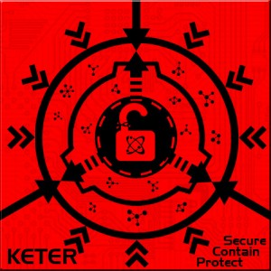

¿QUE ES UN SCP?La sigla significa Special Containment Procedures (Procedimientos Especiales de Contención), además de hacer referencia al lema Secure, Contain, Protect (Asegurar, Contener, Proteger, generalmente traducido como Seguridad, Contención, Protección). La Fundación SCP es una organización ficticia dedicada a la investigación de fenómenos paranormales. Pertenece al universo de ficción colaborativa registrado en el sitio web homónimo. Dentro del entorno de la página, la Fundación SCP es la responsable de localizar y contener a individuos, entidades, ubicaciones y objetos que violan la ley natural (referidos como SCP). La web es redactada por comunidades de usuarios e incluye elementos de diversos géneros tales como horror, ciencia ficción y fantasía urbana. Las entradas incluyen procedimientos de contención adecuados para las entidades paranormales que alberga la fundación, y relatos cortos sobre eventos relacionados con la actividad que realizan. También ha inspirado obras derivadas, tales como el videojuego independiente SCP: Containment Breach. En su universo ficticio, la Fundación SCP es una organización secreta con el objetivo de contener y estudiar individuos, entidades, lugares, objetos y fenómenos anómalos que desafían la ley natural (denominados como "objetos SCP" o coloquialmente como "SCP").3 Si no se contuvieran, los SCP representarían una amenaza para los humanos o, al menos, para el sentido de la realidad y la normalidad de la humanidad. La Fundación SCP mantiene en secreto la existencia de los objetos SCP para evitar un pánico masivo y permitir que la civilización humana funcione normalmente. Cuando un SCP es descubierto, la Fundación SCP despliega agentes para recolectar y transportar el SCP a una instalación de la Fundación, o para contenerlo en la ubicación del descubrimiento si transportarlo no es posible. Una vez que los SCP son contenidos, son estudiados por científicos de la Fundación. Sujetos de prueba adquiridos por la Fundación (denominados como "personal de clase D") se utilizan para interactuar con los SCP peligrosos debido al peligro que representan esos SCP y la prescindibilidad del personal de clase D La Fundación SCP mantiene documentación sobre todos los SCP bajo su custodia, esta puede incluir informes y archivos relacionados. Estos documentos describen a los SCP e incluyen instrucciones para mantenerlos contenidos de manera segura. |
Video Sobre lo que es la fundacion SCP |
¿COMO SE CLASIFICAN?todos los objetos anómalos, entidades, y fenómenos que requieren de Procedimientos Especiales de Contención se les asigna una Clase de Objeto para favorecer las prioridades de investigación o presupuestarias, entre otras consideraciones. La clase asignada a un objeto se determina generalmente por un número de factores, pero más importantemente por la combinación de las dificultades para contenerlo, así como el peligro que representa para el personal de La Fundación y la humanidad en general... Una clase de objeto es una parte de la plantilla SCP estándar y sirve como un indicador aproximado de la dificultad de contener un objeto. En el universo, las clases de objetos tienen el propósito de identificar las necesidades de contención, la prioridad de investigación, el presupuesto y otras consideraciones. La clase de objeto de un SCP está determinada por una serie de factores, pero los factores más importantes son la dificultad y el propósito de su contención. Los "objetos" que contiene esta fundacion se clasifican en 3 categorias... |
CLASES

CLASE SAFE
Los objetos Clase-Seguro son aquellas anomalías que son entendidas lo suficientemente bien como para contenerlas de forma confiable y permanente, o de otra manera, no activan sus efectos anómalos por si mismos o no intencionalmente.
Clasificar a una anomalía como Segura, sin embargo, no significa que su manejo o activación no represente una amenaza, y el personal ha de recordar que los Procedimientos Especiales de Contención y Protocolos de Seguridad deben ser efectuados correctamente en todo momento.
SCP-999
-Clase: Seguro
•Procedimientos Especiales de Contención: SCP-999 tiene permitido vagar libremente por la instalación en caso que lo desee, pero por lo demás debe permanecer en su corral. Al sujeto no se le permitirá salir de su corral durante la noche o estar fuera de las instalaciones en cualquier momento. El corral debe mantenerse limpio y la comida debe ser remplazada dos veces al día. Todo el personal tiene permitido entrar en el área de SCP-999, pero sólo si no tienen otra tarea asignada en ese momento, o si están en su descanso. Se debe jugar con el sujeto cuando este se aburra y se le debe hablar en un tono tranquilo, no amenazador.
•Descripción: SCP-999 parece ser una gran masa amorfa y gelatinosa de fango naranjo traslúcido, pesando alrededor de 54 kg (120 Libras), con una consistencia similar a la de la mantequilla de cacahuete. El tamaño y la forma del sujeto cambian constantemente, aunque la mayoría del tiempo toma la forma de un gran puff. La composición de SCP-999 consiste en una sustancia aceitosa desconocida para la ciencia moderna. Además de una membrana delgada y transparente que rodea la masa naranja, el sujeto no parece tener otros órganos dignos de mención.
•Comportamiento: El temperamento del sujeto puede describirse como un perro juguetón y fiel: Cuando se le acercan, SCP-999 reaccionará con una euforia abrumadora, deslizándose hacia la persona más cercana y saltando sobre ella, "abrazándola" con un par de pseudópodos mientras acaricia la cara de la persona con un tercer pseudópodo, emitiendo gorjeos agudos y arrullos todo el tiempo. La superficie de SCP-999 emite una fragancia placentera que difiere según con quien interactúe. Olores registrados incluyen chocolate, ropa recién lavada, tocino, rosas, y Play-Doh.
Además de su comportamiento juguetón, SCP-999 parece amar a todos los animales (especialmente a los humanos), negándose a comer cualquier tipo de carne e incluso arriesgando su propia vida para salvar a otros, llegando a saltar en frente de las personas para recibir una bala que haya sido disparada hacia ellos. (El intelecto del sujeto sigue siendo tema de debate: aunque su comportamiento es infantil, parece entender el habla humana y la mayor parte de la tecnología moderna, incluyendo las armas de fuego.) La dieta de la criatura consiste íntegramente de dulces y caramelos, siendo M&M’s™ y las obleas Necco™ sus favoritos. Su método de alimentación es similar al de una ameba
•Habilidades: Simplemente tocar la superficie de SCP-999 causa una euforia inmediata, la que se intensifica mientras más tiempo se mantenga expuesto a SCP-999, y dura un tiempo después de separarse de la criatura. La actividad favorita del sujeto es la lucha de cosquillas, a menudo envolviendo completamente a la persona desde el cuello hacia abajo y haciéndole cosquillas hasta que se le pide detenerse (aunque no siempre cumple esta petición inmediatamente). Si bien la criatura interactuará con cualquiera, parece tener un interés especial en aquellos que son infelices o están dañados de alguna forma. Personas que sufrían de depresión paralizante, después de interactuar con SCP-999, han regresado completamente curados y con una visión muy positiva de la vida. Actualmente se discute la posibilidad de comercializar el fango de SCP-999 como un antidepresivo.
•Imagen de Referencia:
video con mas informacion del SCP-999
CLASE EUCLID
Los objetos Clase-Euclid son anomalías que no son lo suficientemente entendidas o inherentemente predecibles como para que la contención fiable no sea confiable o posible, pero no suponen una amenaza tan grande como para entrar en la Clase-Keter. La gran mayoría de las anomalías catalogadas y contenidas por La Fundación son inicialmente clasificadas como Euclid hasta que son lo suficientemente comprendidas o exhiben un gran peligro para la humanidad y son clasificadas de otra forma.
En particular, toda anomalía que exhiba autonomía, la capacidad de sentir y/o sapiencia se clasifica generalmente como una entidad Clase-Euclid, debido a la impredisibilidad inherente del objeto que pueda actuar o pensar por sí mismo.
SCP-096
-Clase: Euclid
•Procedimientos Especiales de Contención: SCP-096 debe contenerse en su celda, un cubo hermético de acero de 5m x 5m x 5m, en todo momento. Chequeos semanales para detectar posibles grietas o agujeros son obligatorios. Para la vigilancia no debe emplearse bajo ninguna circunstancia ningún dispositivo óptico o cámaras de vídeo. El personal de seguridad debe utilizar sensores de presión preinstalados y detectores láser para asegurar la presencia de SCP-096 en el interior de la celda.
•Descripción: SCP-096 es una criatura humanoide que mide aproximadamente 2,38 metros de altura. El sujeto muestra muy poca masa muscular, el análisis preliminar de la masa corporal sugiere desnutrición leve. Los brazos están totalmente fuera de proporción con el resto del cuerpo del sujeto, con una longitud aproximada de 1,5 metros cada una. La piel, en su mayoría, carece de pigmentación, y no hay indicios de ningún vello corporal.
La mandíbula de SCP-096 se puede abrir hasta cuatro (4) veces más de lo que cualquier humano promedio puede. Otras características faciales siguen siendo similares a un humano medio, con la excepción de los ojos, que también carecen de pigmentación. Todavía no se sabe si el SCP-096 es ciego o no. No muestra signos de las funciones superiores del cerebro, y no se considera que sea sapiente.
•Comportamiento: SCP-096 normalmente es extremadamente dócil, los sensores de presión en el interior de su celda indican que gasta la mayor parte del día apoyándose en la pared oriental. Sin embargo, cuando alguien lo ve a la cara, ya sea directamente, a través de la grabación de vídeo, o incluso una fotografía, SCP-096 entrará en una etapa de angustia emocional considerable. SCP-096 cubre su rostro con sus manos y comienza a gritar, llorar y balbucear incoherencias. Aproximadamente uno (1) a dos (2) minutos después de la primera visita, SCP-096 comenzará a correr hacia la o las personas que vieron su rostro (que de ahora en adelante se denominarán como SCP-096-1).
•Habilidades: Las velocidades documentadas han variado de treinta y cinco (35) km/h esto parece depender de la distancia de SCP-096-1. Hasta ahora, ningún material conocido o método puede impedir el avance del SCP-096. La posición real de SCP-096-1 no parece afectar a la respuesta del SCP-096, sino que parece tener un sentido innato de la ubicación de SCP-096-1. Nota: Esta reacción no tiene lugar cuando se visualiza representaciones artísticas
Al llegar a la ubicación de SCP-096-1, SCP-096 procederá a matar y [DATOS EXPURGADOS] al SCP-096-1. En el 100% de los casos no ha dejado rastros de SCP-096-1. SCP-096 entonces se sentará durante varios minutos antes de recuperar su compostura y ser dócil una vez más. A continuación, tratará de seguir el camino de regreso a su hábitat natural, [DATA EXPURGADA]
Debido a la posibilidad de una reacción en cadena en masa, incluyendo la violación del secreto de la Fundación y gran pérdida de vidas civiles, la recuperación de sujetos debe ser considerada prioridad Alfa.
•Imagen de Referencia:
video con mas informacion del SCP-096
CLASE KETER
Los objetos Clase-Euclid son anomalías que no son lo suficientemente entendidas o inherentemente predecibles como para que la contención fiable no sea confiable o posible, pero no suponen una amenaza tan grande como para entrar en la Clase-Keter. La gran mayoría de las anomalías catalogadas y contenidas por La Fundación son inicialmente clasificadas como Euclid hasta que son lo suficientemente comprendidas o exhiben un gran peligro para la humanidad y son clasificadas de otra forma.
En particular, toda anomalía que exhiba autonomía, la capacidad de sentir y/o sapiencia se clasifica generalmente como una entidad Clase-Euclid, debido a la impredisibilidad inherente del objeto que pueda actuar o pensar por sí mismo.
SCP-682
-Clase: Keter
•Procedimientos Especiales de Contención: SCP-682 debe ser destruido lo antes posible. Actualmente, no existen recursos disponibles para los equipos SCP capaces de destruir a SCP-682, solo siendo capaces de producir daño físico masivo. SCP-682 deberá ser contenido en una cámara de 5m x 5m x 5m recubierta con placas de acero reforzado resistente al ácido. La cámara de contención deberá ser llenada con ácido clorhídrico hasta que SCP-682 esté cubierto e incapacitado. Cualquier intento de SCP-682 de moverse, hablar o escapar de su celda deberá provocar una reacción inmediata de todas las fuerzas disponibles de acuerdo a las circunstancias.
El personal tiene prohibido hablar con SCP-682, por miedo a provocar un estado de ira. Todo personal no autorizado que intente comunicarse con SCP-682 deberá ser restringido y removido a la fuerza.
Dados sus frecuentes intentos de escape, la dificultad de su contención e incapacitación y la seria amenaza de exposición de la Fundación, SCP-682 estará contenido en el Sitio [CENSURADO]. La Fundación usará sus mejores recursos para mantener toda la tierra en 50km a la redonda de dicho sitio libre de asentamientos humanos.
•Descripción: SCP-682 es una criatura grande y semejante a un reptil, de origen desconocido. Aparentemente es extremadamente inteligente, y ha sido observado manteniendo una compleja comunicación con SCP-079 durante su corto tiempo de exposición. SCP-682 tiene un desprecio por todo ser vivo, lo cual ha sido expresado en varias entrevistas durante su contención. (Vea Anexo 682-B).
•Habilidades: SCP-682 siempre ha poseído fuerza, velocidad y reflejos extremadamente grandes, aunque sus niveles exactos varían con su forma. El cuerpo físico de SCP-682 crece y cambia muy rápidamente, aumentando o disminuyendo su tamaño mientras consume o destruye material. SCP-682 obtiene energía de cualquier cosa que ingiere, sea orgánica o inorgánica. Su digestión es aparentemente apoyada por una serie de branquias filtrantes dentro de las fosas nasales de SCP-682, que son capaces de remover materia útil de cualquier solución líquida, lo que le permite regenerarse constantemente del ácido en el que está contenido. Las capacidades regenerativas y la resiliencia de SCP-682 son asombrosas, y SCP-682 ha sido visto en movimiento y hablando con el 87% de su cuerpo destruido o podrido.
En el caso de una brecha de contención, SCP-682 deberá ser rastreado y re-capturado por todas las fuerzas disponibles, y ningún equipo con menos de siete (7) miembros tendrá autorización para atacarle. Hasta la fecha los intentos de escape han llegado a diecisiete (17), mientras los escapes exitosos llegan a seis (6). (Véase Anexo 682-D).
•Imagen de Referencia: